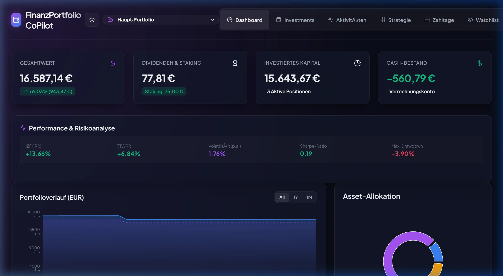

📊 Finanzportfolio — Vermögensplaner & Dashboard📊 Financial Portfolio — Wealth Planner & Dashboard

Ein interaktives Dashboard zur Analyse und Verwaltung des persönlichen Vermögens. Visualisiert Vermögensaufteilungen und simuliert Kursentwicklungen.
An interactive dashboard to analyze and manage personal wealth. Visualizes asset allocation and simulates market trends.